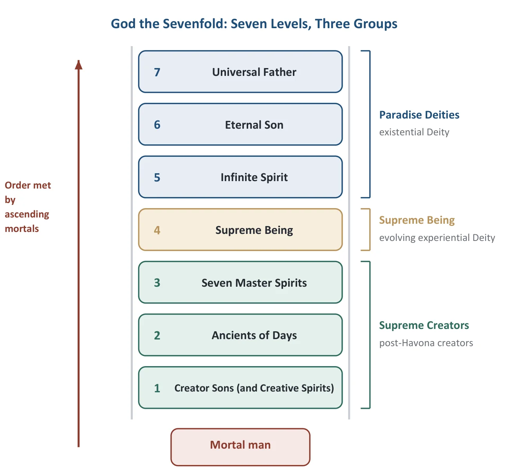

La perfección como tesis creadora
Original: La Historia Finita, capítulo I, La tesis creadora de la perfección (pp. 31–37)
EN ESTE CAPÍTULO
La segunda edad del universo, que Sadler llama «la Historia Finita», se abre con la creación de los Siete Espíritus Rectores y de los Ancianos de los Días y se cierra cuando se completa la evolución del Ser Supremo. No comenzó de forma abrupta. El crepúsculo de la primera edad se fue fundiendo lentamente con el alba de la segunda. En este período la Deidad empieza a obrar en el «nivel creador» y, mediante la asociación llamada Dios el Séptuple, se extiende hacia el tiempo y el espacio. La eterna Havona, mientras tanto, se convierte en la «tesis de la perfección» que se presenta ante los universos imperfectos que la rodean.
1. La entrada en la Historia Finita (orig., pp. 31–32)
Después de tratar en su prólogo una eternidad sin principio ni fin, Sadler cambia ahora de escenario. La segunda gran división de su libro, «la Historia Finita», se compone de tres capítulos: la tesis creadora de la perfección, la antítesis evolutiva y la primera síntesis, Dios el Supremo.
La mayor parte de El libro de Urantia es, de hecho, la historia de los siete superuniversos en evolución, la historia de lo que está sucediendo aquí y ahora. La creación y la evolución en el tiempo y el espacio hallan finalmente su destino en superuniversos perfeccionados bajo la soberanía del Ser Supremo; tal es, en pocas palabras, el argumento de la segunda edad del universo.
Sadler subraya que, a diferencia de la eternidad que la precedió, esta es una edad que podemos «comprender». La segunda edad tiene un comienzo y un fin en el tiempo. Para el lector que ha venido avanzando a tientas por la eternidad pasada, esto trae el alivio de pisar por fin suelo firme. Sadler llega a sugerir que el verdadero estudio del universo maestro comienza en este punto.
El marco de tesis, antítesis y síntesis
Sadler lee la historia del universo maestro como un patrón que se repite de tesis, antítesis y síntesis. Primero se da algo perfecto (tesis); frente a ello aparece algo imperfecto (antítesis); y a medida que lo imperfecto crece hasta la perfección, ambos quedan unidos en uno (síntesis). Este marco no es lenguaje propio de El libro de Urantia; es una herramienta interpretativa que Sadler ha tomado prestada. Sin embargo, como el texto trata la perfección de Havona y la imperfección de los universos en evolución como compañeros complementarios, y presenta al Ser Supremo como su síntesis, el esquema encaja bien con el movimiento de la revelación.
2. El alba del tiempo: la apertura de la segunda edad (orig., pp. 32–33)
Crepúsculo y alba
¿Qué puso fin a la edad de Havona y abrió la edad de los superuniversos? La respuesta de Sadler es que ningún momento aislado lo hizo. Así como el cielo se aclara poco a poco antes de la salida del sol, el crepúsculo de la primera edad dio paso gradualmente al alba de la segunda. Los acontecimientos que se describen a continuación son los que tuvieron lugar, uno tras otro, en esa transición.
Sadler plantea primero, entre paréntesis, una conjetura. Mucho antes de que comenzara formalmente la segunda edad, supone, los Arquitectos del Universo Maestro quizá enviaron organizadores de la fuerza al nivel espacial de los superuniversos para reunir energías y organizar nebulosas. El texto no ofrece tal cronología; se trata de una inferencia de Sadler.
Los Siete Espíritus Rectores: la primera Deidad experiencial
Sadler considera que el primer acontecimiento posterior a la eternidad, es decir, posterior a Havona, fue la aparición de los Siete Espíritus Rectores. Aunque estos excelsos espíritus no son seres absolutos, representan a la Deidad del Paraíso en todos los niveles inferiores al absoluto. En los términos de Sadler, estos son los niveles finito, subabsoluto y finito-subabsoluto; en palabras más familiares, el supremo, el último y el supremo-último.
Sadler destaca dos puntos esenciales acerca de los Espíritus Rectores. En primer lugar, son seres experienciales y no existenciales, la primera expresión de la Deidad experiencial. En segundo lugar, cada uno de ellos encarna personalmente una de las siete maneras en que pueden combinarse las tres personas de la Deidad: el Padre, el Hijo y el Espíritu por separado; los pares Padre-Hijo, Padre-Espíritu e Hijo-Espíritu; y la tríada Padre-Hijo-Espíritu.
… como expresiones primarias de las siete asociaciones posibles de la Deidad Triuna, ellos son esencialmente distintos en su naturaleza, y esta diversidad de naturaleza determina su diferencial de conducta superuniversal.16:3.1
Aquí Sadler establece una conexión sugerente. Puesto que matemáticamente solo hay siete maneras de combinar tres personas, hay siete Espíritus Rectores, y precisamente por esa razón el nivel espacial de los superuniversos llegó a dividirse en siete segmentos. El libro de Urantia asocia claramente los siete superuniversos con los Siete Espíritus Rectores, pero la afirmación causal de que el número de segmentos «deriva» del número de combinaciones es interpretación de Sadler.
Dios el Supremo aparece en Havona
En algún momento de ese crepúsculo tuvo lugar otro acontecimiento: Dios el Supremo hizo su aparición en Havona. Su presencia tenía su fuente en la Trinidad del Paraíso, y existía como persona espiritual. Estaba presente en el universo central incluso antes de que los superuniversos se organizaran formalmente. Sin embargo, entonces como ahora, las criaturas no podían acercarse a él ni establecer contacto directo con él.
Dios el Supremo, como persona, existía en Havona antes de la creación de los siete superuniversos, pero actuaba sólo en los niveles espirituales.56:6.2
Dios el Supremo comenzó como una persona espiritual sin poder. Cómo llega a añadirse poder a esa persona espiritual es el hilo central de los capítulos 6 y 7.
El mandato de la Trinidad y los Ancianos de los Días
A continuación, por mandato de la Trinidad del Paraíso, se organiza el gran universo: Havona queda en el centro, con los siete superuniversos dispuestos a su alrededor. Sadler piensa que hacia esa época la Trinidad creó a los veintiún Ancianos de los Días que gobernarían los siete superuniversos en grupos de tres. Poco después se construyeron las siete capitales superuniversales, y los Ancianos de los Días habrían dejado entonces el Paraíso para establecer su residencia en sus esferas capitales.
El actual esquema de administración ha existido desde cerca de la eternidad, y los gobernantes de estos siete superuniversos se llaman justamente los Ancianos de los Días.15:0.2
Hijos Creadores, Espíritus Creativos y mortales
Algo más tarde el Padre y el Hijo comienzan a crear a los Hijos Creadores, y el Espíritu Infinito responde produciendo a los Espíritus Creativos como sus complementos. A su debido tiempo, estos Hijos del Universo y Espíritus del Universo reciben el encargo de gobernar los universos locales, y la segunda edad llega a su pleno florecimiento. Poco después aparecen mortales evolutivos en los mundos del espacio, y los peregrinos del tiempo emprenden el largo ascenso al Paraíso en busca del Padre Universal.

Todos son seres experienciales
Sadler se detiene en esta transición para mostrar lo que tienen en común los seres que van apareciendo. Desde el hombre mortal hasta los Espíritus Rectores y Dios el Supremo, los nuevos seres de la segunda edad son todos experienciales. No lo saben todo antes de haberlo experimentado; crecen aprendiendo y viviendo.
Los creadores no son una excepción. Los Hijos Creadores y los Espíritus Creativos cambian de estado a medida que atraviesan la experiencia de organizar y perfeccionar sus universos locales. Si la Deidad existencial es Aquel que «ya lo es todo», los seres experienciales son seres que están «llegando a ser». La segunda edad es la edad del llegar a ser.
3. Dios el Séptuple: la Deidad creadora (orig., pp. 33–36)
Una escalera viviente entre Dios y el hombre
Con la organización de los siete superuniversos comenzó a funcionar la asociación creadora conocida como Dios el Séptuple. Sadler presenta a Dios el Séptuple como la extensión creadora y asociativa de las Deidades del Paraíso hacia el tiempo y el espacio. Es así como la Deidad entra en contacto con cada criatura de los superuniversos y de los universos locales. En sentido figurado, es una escalera viviente hecha de personalidades divinas, que salva la distancia entre un ser humano y el Padre del Paraíso.
Para compensar el estado de finitud y las limitaciones de concepto de la criatura, el Padre Uniersal ha establecido el acercamiento séptuplo de la criatura evolucionaria a la Deidad:0:8.1
Esta asociación funciona en siete niveles, y sus miembros se agrupan en tres grandes conjuntos. En lo alto están las conocidas Deidades del Paraíso: el Padre Universal, el Hijo Eterno y el Espíritu Infinito. En el medio está la Deidad experiencial, el Ser Supremo. Abajo están los Creadores Supremos, que comprenden a los Hijos Creadores, los Ancianos de los Días y los Siete Espíritus Rectores.

Lo nuevo es el cuerpo de los Creadores Supremos, los «creadores post-Havona». Ellos organizan y perfeccionan los siete superuniversos y los setecientos mil universos locales que aún han de venir. Cada Espíritu Rector impregna un superuniverso y determina su carácter individual; los Ancianos de los Días gobiernan cada superuniverso en forma de tríada; y cada Hijo Creador, junto con un Espíritu Creativo, crea o hace evolucionar un universo local y su vida nativa.
En qué sentido contar los siete niveles
El Prólogo de El libro de Urantia cuenta los niveles de Dios el Séptuple de abajo arriba: el número 1 son los Hijos Creadores del Paraíso y el número 7 es Dios el Padre [0:8.2–8]. Este orden sigue aquel en que un mortal ascendente se encuentra efectivamente con ellos. En este capítulo Sadler cuenta en sentido contrario, poniendo primero al Padre, pero en el cuadro resumen del capítulo siguiente vuelve a colocar primero al Hijo Creador. Empecemos por el extremo que empecemos, el contenido es el mismo. Contada desde arriba, la escalera muestra el camino por el que desciende la Deidad; contada desde abajo, muestra el camino por el que asciende la persona.
El Ser Supremo ocupa un lugar singular en esta asociación. Sadler lo llama la Deidad experiencial en evolución y explica que su emergencia gradual descansa en tres cosas: lo que los Creadores Supremos logran en los dominios del tiempo y el espacio, el fruto de su cooperación exitosa con las Deidades del Paraíso y el propio esfuerzo del Ser Supremo por crecer.
La Deidad entra en el nivel creador
Sadler se detiene aquí para observar que la Deidad ha entrado en un nuevo nivel de actividad. El Prólogo nos dice que la Deidad total funciona en siete niveles [0:1.3]. En su prólogo Sadler consideró que la Deidad había comenzado en el nivel estático, había pasado por el nivel potencial y, hacia el alba de la primera edad, estaba obrando en el nivel asociativo. Ahora sale a la luz una diferencia fundamental entre la primera y la segunda edad: la Deidad ha entrado en el cuarto nivel de actividad, el creador.
4. Creador — Deidad autodistributiva y divinamente revelada.0:1.7
¿Qué significa esto? Según lo explica Sadler, la Deidad ha comenzado a sacar del vasto depósito de la realidad potencial, los potenciales de los tres Absolutos. Potenciales básicos de carácter preespiritual, premental y prematerial se transmutan y empiezan a emerger en los nuevos universos como espíritu nuevo, mente nueva y materia nueva.
El proceso de la creación es, en efecto, un proceso de transmutación. Ya se trate de una nueva personalidad espiritual, de un nuevo nivel funcional de la mente o de una nueva nebulosa que algún día llegará a ser el material de un universo local, estas «nuevas realidades», explica Sadler, proceden en última instancia de los tres Absolutos de la potencialidad. Para prolongar la imagen del depósito: hasta la primera edad solo se había ido llenando, y en la segunda edad se abrieron por primera vez las compuertas, dejando que el agua corriera por los campos.
4. La Havona de la segunda edad: la tesis de la perfección (orig., pp. 36–37)
Un universo precreativo y un universo modelo
En el prólogo Sadler trató la Havona de la primera edad como precreativa, como algo que de hecho nunca tuvo comienzo. En sentido estricto, esa es probablemente la manera correcta de clasificar el universo central. Sin embargo, en términos prácticos, en relación con los superuniversos, Havona es una creación, el universo modelo de la perfección divina.
En la segunda edad Havona se convierte en la tesis divina de la perfección, un desafío de Dios presentado ante los universos imperfectos en evolución que la rodean. A toda criatura Dios le extiende esta invitación:
Del Padre Universal que habita la eternidad ha emanado el mandato supremo: «Sed vosotros perfectos, así como yo soy perfecto».1:0.3
Sadler sostiene que este mandato se dirige no solo a las criaturas individuales, sino también a cada Hijo Creador y a cada Espíritu Creativo. ¿Pueden ellos, mediante la creación y la evolución experienciales, reproducir en sus propios dominios la perfección eterna del universo existencial que se encuentra en el corazón de todas las cosas? Havona es el modelo; los universos en evolución son el taller en el que ese modelo ha de estudiarse y en el que la misma obra ha de forjarse de nuevo.
El desafío también llega a Havona
Sadler no ve esta relación como algo que corra en un solo sentido. Si Havona desafía a los superuniversos imperfectos, esos superuniversos necesitados desafían a su vez a Havona. La creación central responde mucho antes de que el primer mortal ascendente llegue a sus dominios establecidos. Los acontecimientos venideros proyectan su sombra por delante.
Cuando la primera edad entra en su «crepúsculo», el desafío entra por primera vez en la inmutable Havona. Aparecen seres nuevos. Los siete circuitos de Havona han existido siempre, y sin embargo ahora se encuentran Espíritus de los Circuitos obrando en cada uno de ellos. Centros de poder ocupan puestos permanentes en los siete circuitos. Cada una de las mil millones de esferas recibe sus Censores Universales. Así se prepara la creación central para los acontecimientos venideros.
La llegada de Grandfanda
Cuando Grandfanda, el primer peregrino mortal, llega a Havona, le sigue una multitud de nuevos acontecimientos. Aparece un nuevo orden de espíritus ministrantes, los supernafines secundarios. Los ciudadanos del Paraíso emprenden un peregrinaje hacia fuera a través de Havona. El primer Guía de los Graduados da la bienvenida a Grandfanda.
No hay registro de Guías de los Graduados en ninguno de los reinos del universo central hasta aquel día distante cuando el primer peregrino mortal del tiempo se abrió camino hasta el cinturón exterior de la creación central.24:6.4
Los ascendentes de los superuniversos traen a la creación central las semillas del crecimiento evolutivo. Así, la Havona de la segunda edad sigue siendo un universo eterno y precreativo, a la vez que se convierte en un universo creativo y cambiante, incluso en evolución. Cuando los huéspedes entraron en la casa perfecta, la casa misma comenzó a cambiar para recibirlos.
Puntos clave
- La segunda edad del universo, «la Historia Finita», comienza con la creación de los Siete Espíritus Rectores y de los Ancianos de los Días y termina cuando se completa la evolución del Ser Supremo. Es una edad que podemos comprender, con un comienzo y un fin.
- El paso de la primera edad a la segunda no fue un acontecimiento repentino, sino un proceso gradual, como el crepúsculo que se torna en alba.
- Los Siete Espíritus Rectores son la primera Deidad experiencial y expresan las siete combinaciones posibles entre las tres personas de la Deidad. Sadler encuentra en este número la razón de que haya siete superuniversos.
- Antes de que se organizaran los superuniversos, Dios el Supremo estaba presente en Havona como persona espiritual, pero funcionaba solo en los niveles espirituales.
- Dios el Séptuple es una escalera compuesta de tres grupos, las Deidades del Paraíso, el Ser Supremo y los Creadores Supremos, y muestra que la Deidad ha entrado en el nivel creador.
- Los nuevos seres de la segunda edad, incluidos los creadores, son todos experienciales; aprenden y crecen.
- En la segunda edad Havona se convierte en la «tesis de la perfección» y, al mismo tiempo, desafiada por los superuniversos, en un universo cambiante que acoge a nuevos seres como los Espíritus de los Circuitos y los Guías de los Graduados.